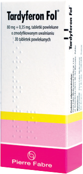
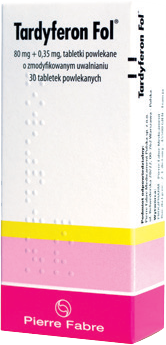

Rekomendowane preparaty żelaza doustnego 2+
Między innymi: żelazo w postaci siarczanu żelaza 2+
Forma o przedłużonym uwalnianiu
Odpowiednia dawka żelaza elementarnego
Kontynuacja terapii do uzupełnienia zapasów żelaza
1. 'Preventing and controlling iron deficiency trough primary health care', WHO, 1989 2. 'Iron Deficiency – Investigation and Management', British Columbia Medical Assotiation, 2010
Wysoka biodostępność przy niższej dawce (3)
80
100
100
3. P. Nielsen, Diagnostic und Therapie von Eisenmangel mit und ohne Anemie. Uni-Med. Verlag Bremen 2009;1-93
Skuteczność w leczeniu niedoboru żelaza oraz anemii z niedoboru żelaza
* 1 x dziennie 80mg Fe+2 (siarczan żelaza) przez 4 tyg. ** 2 x dziennie 80 mg Fe+2 (siarczan żelaza) *** 1 x dziennie 80mg Fe+2 (siarczan żelaza)
4. Verdon F. i wsp. BMJ 2003 ;326;1124 5.Kaltwasser J.P. i wsp. Eur J Clin Invest. 1991;21 :436-442 6.Krafft A. i wsp. BJOG: an Int J Obstet Gynecol.2005;112:445-450
Najmniejsza częstość występowania działań niepożądanych (7)
AE - działania niepoządane 7. Cancelo-Hidalgo M.J. i wsp. Current Medical Reaserch & Opinion 2013;29:1-13
Najmniejsza częstość występowania działań niepożądanych ze strony układu pokarmowego (8)
8. Palacios S. The Scientific World Journal Vol. 2012;1-5
Zmęczenie
Trudności w koncentracji
Problemy ze snem
Zawroty głowy
Bladość skóry
9. Soppi E. Clin Case Rep Rev,2019; 5: 1-7.